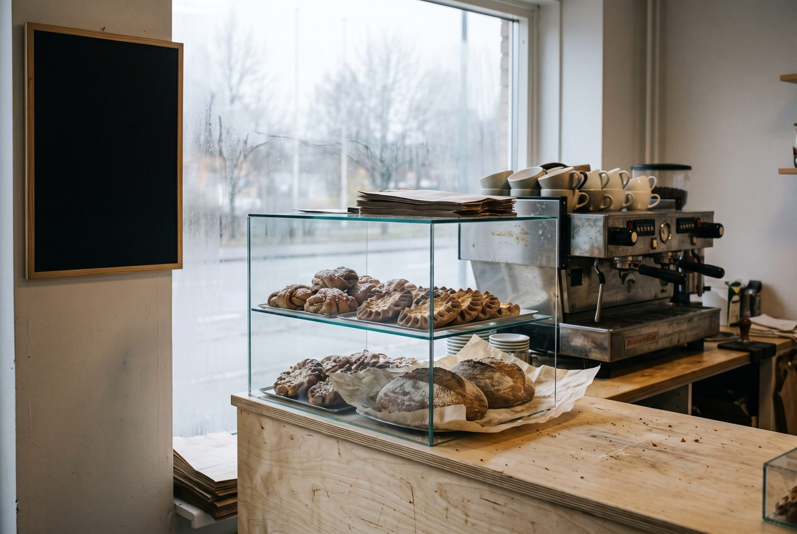
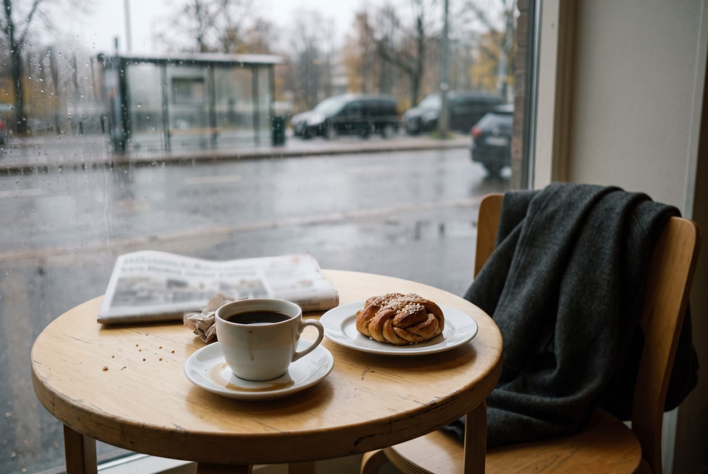

Meistä
Ruista, vettä, suolaa ja 18 tuntia aikaa.
Kaarna on Anni Kaarnaojan ja Tuomas Lehdon leipomokahvila Tikkurilassa. Avasimme syksyllä 2019. Anni leipoo, Tuomas keittää kahvin, ja aamulla kuudelta Esimerkkikatu 3 tuoksuu kardemummalta.

Ihmiset
Neljä ihmistä, kaksi uunia
- Anni KaarnaojaLeipuri, perustaja
Ruokkii juuren joka aamu ennen viittä. Päättää, mitä uunista tulee ja milloin.
- Tuomas LehtoKahvi, perustaja
Valitsee kahvit ja säätää myllyn joka aamu. Hoitaa myös ennakkotilaukset.
- SanniLeipuri
Vastaa pullista ja karjalanpiirakoista. Korvapuustit ovat hänen käsialaansa.
- JoelKahvila ja lounas
Tekee arkilounaan ja tietää aina, mitä vitriinissä vielä on.
Mistä raaka-aineet tulevat
- Ruis ja kauraPerhetila Pirkanmaalla. Jauhetaan kivimyllyssä.
- Maito ja voiLähimeijeri Uudeltamaalta.
- KananmunatVapaan kanan munat pieneltä tilalta Itä-Uudeltamaalta.
- MarjatPuolukat ja mustikat suomalaisista metsistä.
- KahviPieni paahtimo pääkaupunkiseudulla, vaaleaksi paahdettu.
Vuodesta 2019
- Avasimme Esimerkkikadulla. Ruisjuuri aloitettiin samalla viikolla.
- Aloitimme ennakkotilaukset ja noudot ovelta.
- Arkilounas alkoi. Joel tuli taloon.
- Toinen kivipohjainen uuni ja Sanni leipomoon.
- Juuri täyttää seitsemän. Leipää paistuu edelleen joka aamu.

Tule maistamaan, tai tilaa leipä valmiiksi.
Ruisleipä 600 g 6,50 €. Uunista tiistaisin ja perjantaisin.